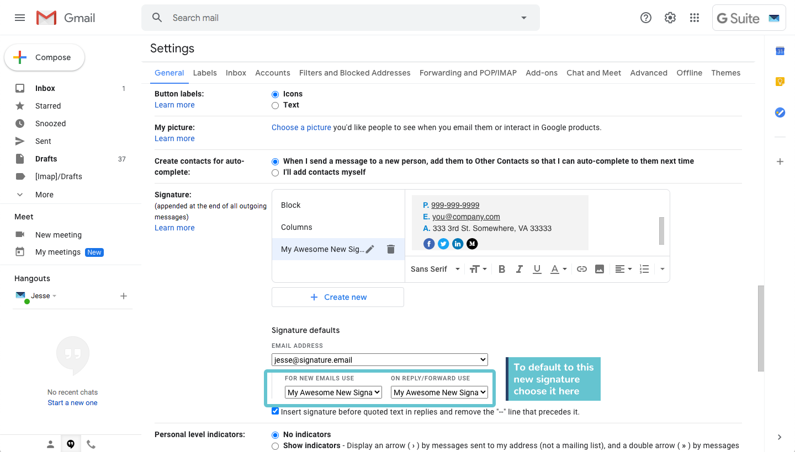

Your Name
Your Title
your.email@princeton10.net
+1 (999) 999 9999

Your Name |
Your Title |
your.email@princeton10.net |
+1 (999) 999 9999 |
|
Highlight the content above the line on this page. Then right click and copy it to your clipboard.
Open the Gmail website. In the top right, click the Gear icon.
This will launch the Quick Settings menu, click the See all settings button.
In the General tab scroll down until you see the Signature section.
This is the primary area where you can manage signatures in Gmail. You can add multiple signatures if you want to switch between them, and you can edit and delete them when needed.
In the Signature area, click Create New under the list of signatures.
It is highly recommended to Create a new signature rather than pasting over an old one. While it may appear that you have removed an old signature from the editor window it often leaves behind invisible styles that can ruin your new signature!
Name your signature and then click Create.
The name you choose doesn't matter too much. It is something only you will see.
Create your Signature, or paste your signature into the box
On Windows you can press Ctrl + V. On a Mac you can press Command + V. You can also often right click and find the Paste option in the menu.
Change the content in the signature to include your name, title, email address, and phone number.
You may want to consider making this new signature your default signature by selecting it in the drop down menu For new emails use and On Reply/Forward Use.
This step is optional, and may depend on what you want.
At the bottom of the page, click Save Changes.
When composing a new email, if you don’t see your signature already look for the pen icon along the bottom right.
Click the pen to choose from a list of your signatures. Clicking on one will apply that signature to that email.